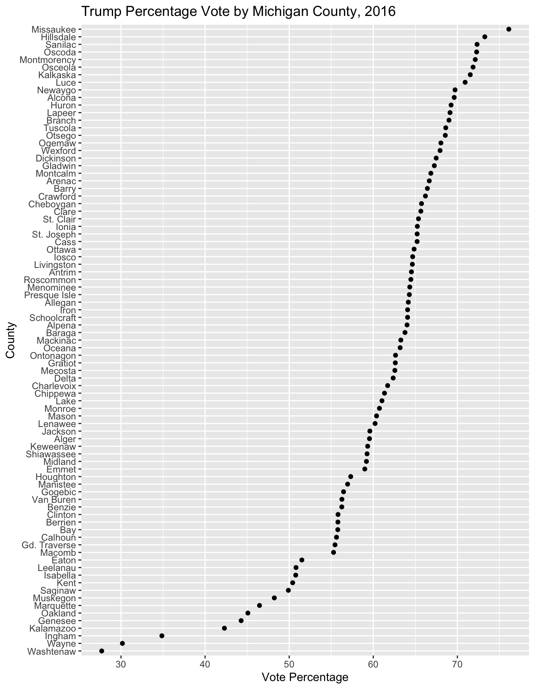

Chapter 5 Data Wrangling: Cleaning and Transforming Data
Chapter 5 reviews functions for manipulating raw data to prepare it for analysis or visualization.
Learning objectives and chapter resources
By the end of this chapter, you should be able to (1) apply key functions to sort, filter, arrange, and restructure data tables for analysis and presentation; (2) use these techniques to process county-level voting returns from an official data source; (3) create clean data tables for visualization; and (4) document the steps involved in transforming raw data into a usable format. The material in the chapter requires the dplyr (Wickham, François, et al. 2023), ggplot2 (Wickham, Chang, et al. 2023), and tibble (Müller and Wickham 2023) packages, which should already be installed as part of the tidyverse. The material uses the following datasets: house_memb_117.csv and 2016GEN_MI_CENR_BY_COUNTY.xls from https://faculty.gvsu.edu/kilburnw/inpolr.html.
5.1 Wrangling and tidying data
Data is rarely analysis-ready or machine readable when obtained from its source. Transforming raw data into a format suitable for analysis — known as “data wrangling” — is a critical step in nearly any research project. And just as important is having code to make the process reproducible, both for transparency and for repeating the steps in the event of an error. This chapter provides tools to take messy or unwieldy data tables and to clean, structure, extract, and prepare data for visualization and further analysis. It is organized into three sections:
First, in brief we will learn about the use of indices to subset data tables by rows and columns. While these are essential to learn, the dplyr package provides a more flexible set of functions for sequencing operations into others such as filtering and arranging rows and columns. Second, we will learn about the core functions of the dplyr package, displayed by function name in Table ?? followed by a brief explanation. We will learn to use these functions with the %>% ‘pipe’ operator, for combining functions by passing the output of one to another. Third, we will apply these skills to cleaning and preparing for visualization Michigan County level voting records from an official source.
Attach the tidyverse to access functions from the packages dplyr and ggplot2.
Save the two Chapter datafiles to your working directory; use the Session menus to change it as needed. Use read_csv() to read in house_memb_117.csv and store it as the data object house_memb_117:
The result, house_memb_117, is stored as a tibble, a particular format for printing a dataframe to the Console. Enter house_memb_117 to observe it. The file house_memb_117.csv is a table of characteristics of representatives to the 117th session of the U.S. House of Representatives, from the canonical source of data on members of Congress and their votes, Voteview.com (Lewis et al. 2023). The file consists of 455 rows and 9 columns. (See the Appendix for details.) Apart from identifiers, the data includes two measures of legislator ideology, nominate_dim1 and nominate_dim2 (K. T. Poole 2005; K. T. Poole and Rosenthal 2006). Developed by the political scientist Keith Poole, ‘NOMINATE’ (an acronym) scores estimate ideology on the principal line of political conflict in Congress, an economic liberalism-conservatism (dim1) and a second (dim2) capturing the legislator’s position on the remaining bundle of issues within a particular session of Congress. See Everson et al. (2016) for an explanation of the meaning and estimation of the scores. Given the file, imagine that we are interested in extracting observations on legislator ideology by State or party caucus, or perhaps sort the legislators by ideology.
Selecting rows and columns with indices
Indices are a fundamental way to select specific rows and columns in a dataframe. Below, the code selects four columns (state_abbrev, party_code, bioname, and nominate_dim1) from house_memb_117:
## # A tibble: 455 × 4
## state_abbrev party_code bioname nomin…¹
## <chr> <chr> <chr> <dbl>
## 1 AL Republican ROGERS, Mike Dennis 0.363
## 2 AL Democratic SEWELL, Terri -0.396
## 3 AL Republican BROOKS, Mo 0.652
## 4 AL Republican PALMER, Gary James 0.678
## 5 AL Republican CARL, Jerry L. 0.52
## 6 AL Republican MOORE, Barry 0.642
## 7 AL Republican ADERHOLT, Robert 0.386
## 8 AK Republican YOUNG, Donald Edwin 0.283
## 9 AK Democratic PELTOLA, Mary Sattl… -0.156
## 10 AS Republican RADEWAGEN, Aumua Am… 0.336
## # … with 445 more rows, and abbreviated variable name
## # ¹nominate_dim1Indices specify positions within the dataframe using the format [r, c], where r represents rows, and c represents columns. When left blank, all rows or columns are selected. For example, house_memb_117[, 6] selects all rows from the sixth column, bioname. Moving the number 6 to the r position selects all columns for the sixth observation, house_memb_117[6, ]. Multiple columns can be selected with the c() function: house_memb_117[, c(1, 2, 3, 4, 5)] selects columns 1 through 5, while house_memb_117[, c(1:5)] achieves the same result with the sequence 1 through 5 specified by 1:5.
In the example above, house_memb_117[, c(4, 5, 6, 8)] returns all rows but only columns 4, 5, 6, and 8. When executed, the result is displayed as a tibble, with a header # A tibble: 455 × 4, showing that the dataset contains 455 rows and 4 columns. The first 10 rows are displayed along with column names, types (<chr> for character, <dbl> for numeric, <fct> for factor), and a comment indicating the remaining rows: # … with 445 more rows.
5.2 Functions for organizing rows and columns
Indices are essential for working with dataframes. The tools from dplyr are different: rather than directly identifying rows and columns with indices to specify a position, dplyr works with functions. As individual functions, each follows a clear pattern. The functions require first the name of a dataset, in this case, house_memb_117, followed by a set of conditions that select rows or columns of the dataset. The result is typically returned as a tibble. Below are examples of key dplyr functions:
Highlight a row of the dataset: filter()
The filter() function selects rows of a data table based on row values. For example, if we wanted to view ideology scores on the elected representatives from New York:13
## # A tibble: 29 × 4
## state_abbrev party_code bioname nomin…¹
## <chr> <chr> <chr> <dbl>
## 1 NY Democratic HIGGINS, Brian -0.348
## 2 NY Democratic CLARKE, Yvette Diane -0.61
## 3 NY Democratic TONKO, Paul -0.418
## 4 NY Republican REED, Thomas W. II 0.269
## 5 NY Democratic MENG, Grace -0.379
## 6 NY Democratic JEFFRIES, Hakeem -0.489
## 7 NY Democratic MALONEY, Sean Patri… -0.239
## 8 NY Republican ZELDIN, Lee M 0.397
## 9 NY Democratic RICE, Kathleen Maura -0.28
## 10 NY Republican STEFANIK, Elise M 0.269
## # … with 19 more rows, and abbreviated variable name
## # ¹nominate_dim1Notice in the printout, the list of representative names followed by the ideology score, ranging from (-1 for more liberal) to (+1 for more conservative). For example, current House minority leader Representative Hakeem Jeffries is scored a -.489, while Representative Elise Stefanik is scored a .269.
Saving data subsets
The filter() function, like other dplyr functions, does not save a new dataset. Instead, it only returns the lines of the dataframe that match the conditions, printing the dataframe out as a tibble.
To save a filtered dataset, such as a New York subset of House member data, we use the assignment operator. To create a data table or ‘tibble’ NY and assign it the contents of the filter:
The result is a dataframe consisting of New York legislators. While the actual dataset includes all 9 variables, subscripts could select just the party, name, and ideology score for printing: party_code, bioname, nominate_dim1: [, c(5,6,8)]:
## # A tibble: 29 × 3
## party_code bioname nominate_dim1
## <chr> <chr> <dbl>
## 1 Democratic HIGGINS, Brian -0.348
## 2 Democratic CLARKE, Yvette Diane -0.61
## 3 Democratic TONKO, Paul -0.418
## 4 Republican REED, Thomas W. II 0.269
## 5 Democratic MENG, Grace -0.379
## 6 Democratic JEFFRIES, Hakeem -0.489
## 7 Democratic MALONEY, Sean Patrick -0.239
## 8 Republican ZELDIN, Lee M 0.397
## 9 Democratic RICE, Kathleen Maura -0.28
## 10 Republican STEFANIK, Elise M 0.269
## # … with 19 more rowsNote that inserting parentheses around the entire expression results in both saving the dataframe to a new object and returning the lines that fit the conditions. So the line (NY<-filter(house_memb_117, state_abbrev=="NY")) will both save the contents of filter() to a new dataframe, NY, and will return the result.
Filtering rows by condition
Filtering and other applicable functions, allow you to use familiar comparison operators. While we used == equal to in the prior examples , other operators are less than or equal to < = , greater than or equal to > = , not equal to !=, and of course less than < and greater than >. Other functions can be combined with filter(), such as is.na()
for identifying observations with missing values; filter(house_memb_117, is.na(born)) would find any row with a missing birth year.
We can use simple Boolean logic to construct filter() functions that satisfy multiple conditions. For example, when conditions in filter() are listed sequentially, the result of the filter operation is the dataset when all conditions are evaluated as true. So the two statements below are equivalent:
filter(house_memb_117, state_abbrev=="NY" , born > 1969)
filter(house_memb_117, state_abbrev=="NY" & born > 1969)These statements query for representatives who are from NY and born after 1969. The symbol for ‘and’ in the line above means that only for those lines when the two conditions state_abbrev=="NY" & born > 1969 are true does the filter() function return a line of the dataset. The symbol | as an operator for ‘or’, substituted for &, would return all NY representatives or those born after 1969, regardless of State.
Combining the two, we can find the names of representatives from New York and New Jersey that fit the two conditions.
## # A tibble: 17 × 9
## chamber icpsr distri…¹ state…² party…³ bioname born
## <chr> <dbl> <dbl> <chr> <chr> <chr> <dbl>
## 1 House 21723 5 NJ Democr… GOTTHE… 1975
## 2 House 21937 3 NJ Democr… KIM, A… 1982
## 3 House 21964 11 NJ Democr… SHERRI… 1972
## 4 House 21101 23 NY Republ… REED, … 1971
## 5 House 21342 6 NY Democr… MENG, … 1975
## 6 House 21343 8 NY Democr… JEFFRI… 1970
## 7 House 21539 1 NY Republ… ZELDIN… 1980
## 8 House 21541 21 NY Republ… STEFAN… 1984
## 9 House 21916 19 NY Democr… DELGAD… 1977
## 10 House 21949 14 NY Democr… OCASIO… 1989
## 11 House 22105 16 NY Democr… BOWMAN… 1976
## 12 House 22117 2 NY Republ… GARBAR… 1984
## 13 House 22127 17 NY Democr… JONES,… 1987
## 14 House 22133 11 NY Republ… MALLIO… 1980
## 15 House 22154 15 NY Democr… TORRES… 1988
## 16 House 22169 19 NY Democr… RYAN, … 1982
## 17 House 22170 23 NY Republ… SEMPOL… 1983
## # … with 2 more variables: nominate_dim1 <dbl>,
## # nominate_dim2 <dbl>, and abbreviated variable
## # names ¹district_code, ²state_abbrev, ³party_codeA tempting shortcut might be to think you can enter the function as state_abbrev=="NY" | "NJ", but that would be incorrect. Instead, to avoid re-typing multiple state_abbrev== statements, use the “in” operator %in%, as in the following structure:
Arranging rows
The arrange() function is used to arrange rows, or change the order in which rows are displayed, rather than select particular rows. With the nominate_dim1 scores, the most obvious use would be to find the most liberal or conservative representatives. For example, arrange(house_memb_117, nominate_dim1) would display, in ascending order, the rows of the dataset starting with the lowest (or most liberal) value. To reverse the order to descending, use desc().
## # A tibble: 455 × 4
## state_abbrev party_code bioname nomin…¹
## <chr> <chr> <chr> <dbl>
## 1 NM Republican HERRELL, Yvette 0.936
## 2 SC Republican NORMAN, Ralph 0.848
## 3 AZ Republican BIGGS, Andrew S. 0.833
## 4 GA Republican CLYDE, Andrew S. 0.823
## 5 IL Republican MILLER, Mary E. 0.806
## 6 GA Republican GREENE, Marjorie Ta… 0.8
## 7 TX Republican ROY, Charles 0.8
## 8 VA Republican GOOD, Bob 0.8
## 9 GA Republican HICE, Jody Brownlow 0.797
## 10 TX Republican JACKSON, Ronny 0.773
## # … with 445 more rows, and abbreviated variable name
## # ¹nominate_dim1The tibble, indexed to house_memb_117[, c(4, 5, 6, 8)], displays the top ten most conservative lawmakers, at the top Rep. Yvette Herrell (R-NM), followed by some familiar names.
Selecting columns
Without indices, the tibble sorted on ideology displayed all columns by default. While indexing with house_memb_117[, c(5, 6, 8)] selects columns by their numeric positions, select() makes it clearer and more intuitive by referencing the column names directly. For example, the following function selects three columns from the dataset for display:
## # A tibble: 455 × 3
## party_code bioname nominate…¹
## <chr> <chr> <dbl>
## 1 Republican ROGERS, Mike Dennis 0.363
## 2 Democratic SEWELL, Terri -0.396
## 3 Republican BROOKS, Mo 0.652
## 4 Republican PALMER, Gary James 0.678
## 5 Republican CARL, Jerry L. 0.52
## 6 Republican MOORE, Barry 0.642
## 7 Republican ADERHOLT, Robert 0.386
## 8 Republican YOUNG, Donald Edwin 0.283
## 9 Democratic PELTOLA, Mary Sattler -0.156
## 10 Republican RADEWAGEN, Aumua Amata Coleman 0.336
## # … with 445 more rows, and abbreviated variable name
## # ¹nominate_dim1This use of select() is equivalent to `house_memb_117[, c(5,6,8)]. Or to display a sequential order of columns, separate the columns with a colon: select(house_memb_117, party_code:nominate_dim1). Adding the function everything() to the end of the function will simply place the remaining variables at the end of the dataframe, select(house_memb_117, party_code:nominate_dim1, everything()).
Renaming columns
To rename a column of a dataframe, use the rename function. In the rename() function, the new variable name is listed first, followed by the old variable name. So to rename nominate_dim1 as left_right_ideology:
## # A tibble: 455 × 3
## party_code bioname left_rig…¹
## <chr> <chr> <dbl>
## 1 Republican ROGERS, Mike Dennis 0.363
## 2 Democratic SEWELL, Terri -0.396
## 3 Republican BROOKS, Mo 0.652
## 4 Republican PALMER, Gary James 0.678
## 5 Republican CARL, Jerry L. 0.52
## 6 Republican MOORE, Barry 0.642
## 7 Republican ADERHOLT, Robert 0.386
## 8 Republican YOUNG, Donald Edwin 0.283
## 9 Democratic PELTOLA, Mary Sattler -0.156
## 10 Republican RADEWAGEN, Aumua Amata Coleman 0.336
## # … with 445 more rows, and abbreviated variable name
## # ¹left_right_ideologyAs in the other functions, for the result to be saved to a dataset, the assignment operator needed to either overwrite the existing dataset or save a new version of it, as in house_memb_117<- rename(house_memb_117, left_right_ideology = nominate_dim1 ). Multiple renames can be combined, such as rename(house_memb_117, left_right_ideology = nominate_dim1, state=state_abbrev), to rename the ideology and state name.
Creating new columns
The mutate() function allows you to create new variables as combinations of other variables. For example, an age in years of each representative in the year 2022 could be calculated from born. With mutate() we name the new variable age and the formula for calculating it, which is the value 2022 minus the variable born, appended as the last column in the data:
## # A tibble: 455 × 5
## state_abbrev party_code bioname born age
## <chr> <chr> <chr> <dbl> <dbl>
## 1 AL Republican ROGERS, Mike De… 1958 64
## 2 AL Democratic SEWELL, Terri 1965 57
## 3 AL Republican BROOKS, Mo 1954 68
## 4 AL Republican PALMER, Gary Ja… 1954 68
## 5 AL Republican CARL, Jerry L. 1958 64
## 6 AL Republican MOORE, Barry 1966 56
## 7 AL Republican ADERHOLT, Robert 1965 57
## 8 AK Republican YOUNG, Donald E… 1933 89
## 9 AK Democratic PELTOLA, Mary S… 1973 49
## 10 AS Republican RADEWAGEN, Aumu… 1947 75
## # … with 445 more rowsThere are many useful functions within mutate(). One is the ranking function.
We might be interested, for example, in ranking representatives in ideology. The min_rank() function will do this. By default, it assigns smallest values the smallest ranks; with the desc() function, we can assign smaller ranks to higher values. For example, assigning smallest ranks to more conservative (higher ideology scores):
The result is a table displaying the most conservative legislators, rank-ordered from most conservative starting at rank position 1. Further limiting the display of columns to fit on the printed page results in:
## # A tibble: 455 × 4
## bioname born nomin…¹ conse…²
## <chr> <dbl> <dbl> <int>
## 1 ROGERS, Mike Dennis 1958 0.363 178
## 2 SEWELL, Terri 1965 -0.396 349
## 3 BROOKS, Mo 1954 0.652 41
## 4 PALMER, Gary James 1954 0.678 31
## 5 CARL, Jerry L. 1958 0.52 103
## 6 MOORE, Barry 1966 0.642 48
## 7 ADERHOLT, Robert 1965 0.386 170
## 8 YOUNG, Donald Edwin 1933 0.283 207
## 9 PELTOLA, Mary Sattler 1973 -0.156 227
## 10 RADEWAGEN, Aumua Amata Coleman 1947 0.336 188
## # … with 445 more rows, and abbreviated variable names
## # ¹nominate_dim1, ²conservative_rankWithout the desc() function, min_rank() assigns higher ranks to smaller values.
Saving new datasets
Without an assignment operator, the functions such as mutate() and select() will not alter the dataset saved within the Environment pane. To create a subsetted data table (or to overwrite the existing data table), the assignment operator is necessary. With the assignment operator for the example with age, the variable is written to the end of the dataframe. For example the following lines add the variable age to the dataframe:
To save only a subset of variables – including the newly created age variable – we would use the select() function to identify specific variables. For example the two lines below create the age variable with mutate(), appending age to house_memb_117_subset, which is a subset of the five variables identified in the next line, saved again as house_memb_117_subset.
house_memb_117_subset<-mutate(house_memb_117, age = 2022-born)
house_memb_117_subset<-select(house_memb_117_subset, state_abbrev,
party_code, bioname, born, age)The new subset data table contains only the five variables:
## # A tibble: 455 × 5
## state_abbrev party_code bioname born age
## <chr> <chr> <chr> <dbl> <dbl>
## 1 AL Republican ROGERS, Mike De… 1958 64
## 2 AL Democratic SEWELL, Terri 1965 57
## 3 AL Republican BROOKS, Mo 1954 68
## 4 AL Republican PALMER, Gary Ja… 1954 68
## 5 AL Republican CARL, Jerry L. 1958 64
## 6 AL Republican MOORE, Barry 1966 56
## 7 AL Republican ADERHOLT, Robert 1965 57
## 8 AK Republican YOUNG, Donald E… 1933 89
## 9 AK Democratic PELTOLA, Mary S… 1973 49
## 10 AS Republican RADEWAGEN, Aumu… 1947 75
## # … with 445 more rows5.3 Combining functions
Often in managing unwieldy datasets, we combine different functions to accomplish a series of steps, such as mutating or creating a new variable, selecting columns, filtering the order of rows, and printing out or saving a subset. Doing so in an efficient way, however, requires us to combine multiple functions in a sequential order. The “pipe operator”, the characters %>% (Bache and Wickham 2020), allows multiple functions to be chained together.
Conceptually, the pipe operator translates to “and then”. So for example, we could filter a dataset, and then select particular rows, and then arrange the rows. The pipe operator simplifies the process of combining functions in a highly readable way, sequential steps separated by %>%. As a core element of the tidyverse, the piper operator is available once dplyr or the entire tidyverse is attached. It is worth noting that a recent update to R added a native pipe, |>, which works nearly identically, although the code in this text relies on %>%. Line by line we will use %>% to combine functions to do the following:
- Filter on representatives from New York.
- Select the columns for party_code, bioname, and nominate_dim1.
- Arrange the dataframe rows by conservatism, from most conservative in row 1 to least at the end.
- Print out the data table.
To do so, we start with the house_memb_117 dataframe and then add the functions line by line, adding %>% until the last command:
house_memb_117 %>%
filter(state_abbrev=="NY") %>%
select(party_code, bioname, nominate_dim1) %>%
arrange(desc(nominate_dim1))## # A tibble: 29 × 3
## party_code bioname nominate_dim1
## <chr> <chr> <dbl>
## 1 Republican SEMPOLINSKI, Joseph 0.545
## 2 Republican TENNEY, Claudia 0.453
## 3 Republican ZELDIN, Lee M 0.397
## 4 Republican JACOBS, Chris 0.306
## 5 Republican MALLIOTAKIS, Nicole 0.304
## 6 Republican GARBARINO, Andrew R. 0.274
## 7 Republican REED, Thomas W. II 0.269
## 8 Republican STEFANIK, Elise M 0.269
## 9 Republican KATKO, John 0.185
## 10 Democratic RYAN, Patrick -0.206
## # … with 19 more rowsNotice that at the end of the tibble, a comment states there are 19 more rows, in addition to the printed 10, for a total of 29 rows and 3 columns. To print the entire tibble (all of the rows) we add print(n=39) as an additional row. Below the print() function prints the top five:
house_memb_117 %>%
filter(state_abbrev=="NY") %>%
select(party_code, bioname, nominate_dim1) %>%
arrange(desc(nominate_dim1)) %>%
print(n=5)## # A tibble: 29 × 3
## party_code bioname nominate_dim1
## <chr> <chr> <dbl>
## 1 Republican SEMPOLINSKI, Joseph 0.545
## 2 Republican TENNEY, Claudia 0.453
## 3 Republican ZELDIN, Lee M 0.397
## 4 Republican JACOBS, Chris 0.306
## 5 Republican MALLIOTAKIS, Nicole 0.304
## # … with 24 more rowsNotice that in each of the functions, such as filter(), it is not necessary to include the name of the dataframe. Through the pipe operator, the dataframe to the left of the first pipe operator house_memb_117 %>% is passed on to each of the functions below it. To save the table to a dataframe, for example named ny_reps, we would change the first line to _ny_reps<-house_memb_117 %>%.
Grouped summary statistics
It is often useful to sort through data by groups within it. The group_by() function, sets a grouping structure for the dataframe that is taken into account when functions like are subsequently applied. It is often useful in combination with the summarize() function, for calculating summary statistics on groups. For example, we may be interested in average ideological orientation of State delegations, or averages within parties within States. Or perhaps we would like to count the number of representatives from each State, by political party.
We would first group the data with group_by() then apply summarize(). Because the summarize() function reduces the data down to a single summary statistic, it requires both a name of the new summary statistic in the data table, and a function to calculate the summary statistic, such as mean(), sum(), range(), max() or min().
For example, in summarize(mean_ideology = mean(nominate_dim1)), mean_ideology will be the column name in the summary dataframe, and mean(nominate_dim1) is the function that calculates the average ideology score.
Let’s observe how it works within partisan groups of New York legislators.
house_memb_117 %>%
filter(state_abbrev=="NY") %>%
group_by(party_code) %>%
summarize(mean_ideology = mean(nominate_dim1))## # A tibble: 2 × 2
## party_code mean_ideology
## <chr> <dbl>
## 1 Democratic -0.381
## 2 Republican 0.334The summarize() function reduces the dataframe to a set of means, ideology by party group. The average Democrat and Republican representative from New York is roughly similar, although the mean Democratic ideology is slightly larger in magnitude than Republican.
The summarize() function can take multiple arguments, allowing you to calculate several summary statistics at once. For example, we could calculate both the mean and standard deviation within parties:
house_memb_117 %>%
filter(state_abbrev=="NY") %>%
group_by(party_code) %>%
summarize(
mean_ideology = mean(nominate_dim1),
sd_ideology = sd(nominate_dim1))## # A tibble: 2 × 3
## party_code mean_ideology sd_ideology
## <chr> <dbl> <dbl>
## 1 Democratic -0.381 0.123
## 2 Republican 0.334 0.111The sd_ideology expression follows after mean_ideology. Note that in these examples of calculating summary statistics, there are no missing values in the data. Where there are missing values R requires specific instructions on what to do with the missing values, in this case it would be to remove missing values from any calculations. For example, the statement for the standard deviation would need to be sd_ideology = sd(nominate_dim1, na.rm = TRUE).
One additional useful function to add to summarize() is n(), which does not require any arguments. The function will count up the number of rows defined by the group_by() function. For example, to add counts of the party_code groups:
house_memb_117 %>%
filter(state_abbrev=="NY") %>%
group_by(party_code) %>%
summarize(
mean_ideology = mean(nominate_dim1),
sd_ideology = sd(nominate_dim1),
count_n = n())## # A tibble: 2 × 4
## party_code mean_ideology sd_ideology count_n
## <chr> <dbl> <dbl> <int>
## 1 Democratic -0.381 0.123 20
## 2 Republican 0.334 0.111 9Overall, with a few functions, starting with those listed in Table ??, datasets can be transformed in nearly limitless ways. The following section demonstrate the use of dplyr functions for shaping up raw datasets, wrangling and cleaning data for use in analysis.
5.4 Cleaning and transforming county-level votes
Another important application of data wrangling is in creating tidy datasets from a source, such as a US Secretary of State’s election portal, aggregated to a geographic level. In this example, we look at election results from the November 2016 general election, aggregated to the Michigan County level. We will extract County-level presidential votes and organize a tidy dataset. From there, we will construct visualizations of the election results across Michigan counties with a specific data visualization, a “Cleveland dotplot” (Cleveland and McGill 1984).
Working with county-level election results
Save the 2016GEN_MI_CENR_BY_COUNTY.xls datafile to your working directory; use the Session menus to change it.14
The data is imported with the read_tsv() (tab-separated value) function from the dplyr package. Place the file in your working directory and run the function. The datafile from the Secretary of State’s Office (2016GEN_MI_CENR_BY_COUNTY.xls) has the file extension .xls, suggesting it is a Microsoft Excel formatted file, but it is actually saved as a tab delimited text file:
When you import the data, you will see a list of columns ‘parsed’ from the data, starting with the ElectionDate and ending with `Nominated(N)/Elected(E). Each row of the dataset corresponds to a single candidate for any elected office appearing on a ballot within each County. So for each County, there are as many rows as there are candidates appearing on the ballot for election to any office, which is why there are 6,082 rows:
## # A tibble: 6,082 × 19
## ElectionDate Offic…¹ Distr…² Statu…³ Count…⁴ Count…⁵
## <chr> <chr> <chr> <chr> <dbl> <chr>
## 1 2016-11-08 01 00000 0 1 ALCONA
## 2 2016-11-08 01 00000 0 1 ALCONA
## 3 2016-11-08 01 00000 0 1 ALCONA
## 4 2016-11-08 01 00000 0 1 ALCONA
## 5 2016-11-08 01 00000 0 1 ALCONA
## 6 2016-11-08 01 00000 0 1 ALCONA
## 7 2016-11-08 01 00000 0 1 ALCONA
## 8 2016-11-08 01 00000 0 1 ALCONA
## 9 2016-11-08 01 00000 0 1 ALCONA
## 10 2016-11-08 01 00000 0 1 ALCONA
## # … with 6,072 more rows, 13 more variables:
## # OfficeDescription <chr>, PartyOrder <chr>,
## # PartyName <chr>, PartyDescription <chr>,
## # CandidateID <dbl>, CandidateLastName <chr>,
## # CandidateFirstName <chr>,
## # CandidateMiddleName <chr>,
## # CandidateFormerName <lgl>, CandidateVotes <dbl>, …We will extract the vote totals within each county for the presidential election, and then organize a Michigan County level presidential elections dataset, to visualize candidate support across counties. So for this purpose the file from the State includes mostly rows of irrelevant election results. So the first step is to delete all rows that do not relate to the presidential election. We use the filter() function to select only the results — the rows — for the presidential election. The OfficeDescription field in the dataset contains indicators for different elections. Open the data spreadsheet in the Environment pane to review the offices. Or table out the office descriptions with table(MI_2016$OfficeDescription).
The presidential election results are stored as President of the United States 4 Year Term (1) Position, in the first set of counties. The other offices follow. To find any set of elections, such as all results for U.S. House elections, we could use a search function to look for all instances of the term Congress in the OfficeDescription field. For example, the function str_detect() will find and return the locations in the dataset of a search string. For example, to find the rows where “Congress” appears, we could enter str_detect(MI_2016$OfficeDescription, "Congress"). This function would give us a result, either TRUE or FALSE for each row. Let’s see what that summary would look like:
## Mode FALSE TRUE NA's
## logical 5651 430 1It shows that 430 rows reference a race for Congress. If we wanted to select only these rows, we would use str_detect() inside the filter() function. These two lines subset the MI_2016 dataset by filtering the OfficeDescription field to select only the rows where the term “Congress” appears: MI_2016 %>% filter(str_detect(OfficeDescription, "Congress")).
Following this example, we filter on the presidential election and save a new version of the data – MI_prez_2016 with just the variables we needed to analyze vote returns over Counties: CountyName, CandidateLastName, CandidateVotes, CountyCode. CountyCode is a Federal Information Processing Standard (FIPS) indicator for each County15
MI_prez_2016<-MI_2016 %>%
filter(OfficeDescription==
"President of the United States 4 Year Term (1) Position") %>%
select(CountyName, CandidateLastName, CandidateVotes, CountyCode)
MI_prez_2016## # A tibble: 1,079 × 4
## CountyName CandidateLastName CandidateVotes County…¹
## <chr> <chr> <dbl> <dbl>
## 1 ALCONA Trump 4201 1
## 2 ALCONA Clinton 1732 1
## 3 ALCONA Johnson 164 1
## 4 ALCONA Castle 28 1
## 5 ALCONA Stein 54 1
## 6 ALCONA Soltysik 0 1
## 7 ALCONA Fox 0 1
## 8 ALCONA Hartnell 0 1
## 9 ALCONA Hoefling 0 1
## 10 ALCONA Kotlikoff 0 1
## # … with 1,069 more rows, and abbreviated variable
## # name ¹CountyCodeReshaping the data, long to wide format
In MI_prez_2016 there is one column of vote counts (CandidateVotes), and for every County a row containing an entry for each presidential candidate listed on the ballot in that County. This way of organizing the data is called ‘long’ format, because the dataset is longer than it is wide; instead of having a different column (or variable) for each candidate’s votes, there is one column to record votes and separate rows for each candidate.
To simplify analysis, we want to restructure the data to ‘wide’ format. In this format, the dataset will have one row per county (exactly 83 rows) and a separate column for each candidate’s vote totals. This wide structure is particularly useful for calculations, such as summing vote totals over all third-party candidates, because it facilitates column based operations.
The function pivot_wider() will translate the data from long to wide data format. The required arguments for pivot_wider() are (1) the names of each new column in wide format, and (2) the values to be stored in these columns. From long format, the names in CandidateLastName will be passed to wide format, while the values in CandidateVotes will be stored in the new wide format columns.
MI_prez_2016_wide <- MI_prez_2016 %>%
pivot_wider(names_from = CandidateLastName,
values_from=CandidateVotes)
MI_prez_2016_wide## # A tibble: 83 × 15
## CountyN…¹ Count…² Trump Clinton Johnson Castle Stein
## <chr> <dbl> <dbl> <dbl> <dbl> <dbl> <dbl>
## 1 ALCONA 1 4201 1732 164 28 54
## 2 ALGER 2 2585 1663 177 19 67
## 3 ALLEGAN 3 34183 18050 2513 289 596
## 4 ALPENA 4 9090 4877 498 53 160
## 5 ANTRIM 5 8469 4448 459 47 146
## 6 ARENAC 6 4950 2384 270 26 60
## 7 BARAGA 7 2158 1156 106 15 49
## 8 BARRY 8 19202 9114 1424 181 346
## 9 BAY 9 28328 21642 2189 208 544
## 10 BENZIE 10 5539 4108 382 36 149
## # … with 73 more rows, 8 more variables:
## # Soltysik <dbl>, Fox <dbl>, Hartnell <dbl>,
## # Hoefling <dbl>, Kotlikoff <dbl>, Maturen <dbl>,
## # McMullin <dbl>, Moorehead <dbl>, and abbreviated
## # variable names ¹CountyName, ²CountyCodeWith the data now in wide format, we create an ‘other’ vote count column. This variable will record vote totals for all candidates who are neither Trump nor Clinton. Within mutate() , the other variable is the sum of each individual candidate column:
MI_prez_2016_wide<-MI_prez_2016_wide %>%
mutate(other=Castle+ Fox + Hartnell + Hoefling + Kotlikoff + Maturen
+ McMullin + Moorehead + Soltysik + Stein) %>%
select(CountyName, CountyCode, Trump, Clinton, other) %>%
print(n=5)## # A tibble: 83 × 5
## CountyName CountyCode Trump Clinton other
## <chr> <dbl> <dbl> <dbl> <dbl>
## 1 ALCONA 1 4201 1732 101
## 2 ALGER 2 2585 1663 93
## 3 ALLEGAN 3 34183 18050 1040
## 4 ALPENA 4 9090 4877 233
## 5 ANTRIM 5 8469 4448 206
## # … with 78 more rowsThen we select() only the necessary columns for recording presidential vote totals across counties, identifiers CountyName and CountyCode, followed by Trump, Clinton, and other. Given the raw votes, we could create vote percentage totals for each candidate:
MI_prez_2016_wide<-MI_prez_2016_wide %>%
mutate(Trump_percent=Trump/(Trump + Clinton + other)*100) %>%
mutate(Clinton_percent=Clinton/(Trump + Clinton + other)*100) ## # A tibble: 83 × 7
## County…¹ Count…² Trump Clinton other Trump…³ Clint…⁴
## <chr> <dbl> <dbl> <dbl> <dbl> <dbl> <dbl>
## 1 ALCONA 1 4201 1732 101 69.6 28.7
## 2 ALGER 2 2585 1663 93 59.5 38.3
## 3 ALLEGAN 3 34183 18050 1040 64.2 33.9
## 4 ALPENA 4 9090 4877 233 64.0 34.3
## 5 ANTRIM 5 8469 4448 206 64.5 33.9
## 6 ARENAC 6 4950 2384 92 66.7 32.1
## 7 BARAGA 7 2158 1156 70 63.8 34.2
## 8 BARRY 8 19202 9114 589 66.4 31.5
## 9 BAY 9 28328 21642 818 55.8 42.6
## 10 BENZIE 10 5539 4108 199 56.3 41.7
## # … with 73 more rows, and abbreviated variable names
## # ¹CountyName, ²CountyCode, ³Trump_percent,
## # ⁴Clinton_percentThe dataset now consists of an organized, wide table of presidential candidate support, one row for each county, and candidate support across multiple columns.
5.5 Wrangling election data and dotplotting results
The ‘Cleveland dotplot’, named after its creator William S. Cleveland, is a data visualization form for comparing quantitative values across categories of a qualitative variable. In this case, we are interested in visualizing levels of candidate support across each Michigan county. Similar to a bar graph, where the lengths of bars would be drawn to scale the percentage of the vote won by each candidate across counties, a Cleveland dotplot replaces bars with dots, arranged along a horizontal or vertical axis. The length of a bar is replaced by position of a dot. By eliminating the area of bars on the graph, the dotplot facilitates comparisons across many categories.
For MI_prez_2016_wide, visualizing raw vote totals is not feasible in one graphic because of the disparity between the largest counties, such as Detroit’s Wayne County, and any of the smaller counties that would appear indistinguishable. What interests us more than raw votes is the percentage of each candidate’s support by county. To construct the dotplot, first in MI_prez_2016_wide because the County names are in all caps, we will convert each one to “title case” – uppercase first letters and lowercase remaining letters — with the str_to_title() function within mutate():
The str_to_title() function (from the stringr package (Wickham 2022) in the tidyverse) converts each word, for example, “ST.CLAIR” to “St. Clair”. Notice the difference:
## # A tibble: 83 × 7
## CountyN…¹ Count…² Trump Clinton other Trump…³ Clint…⁴
## <chr> <dbl> <dbl> <dbl> <dbl> <dbl> <dbl>
## 1 Alcona 1 4201 1732 101 69.6 28.7
## 2 Alger 2 2585 1663 93 59.5 38.3
## 3 Allegan 3 34183 18050 1040 64.2 33.9
## # … with 80 more rows, and abbreviated variable names
## # ¹CountyName, ²CountyCode, ³Trump_percent,
## # ⁴Clinton_percentA key aspect of the Cleveland dotplot is to order the categories (counties) to make the visual comparisons clearer. For example, rather than organize the counties alphabetically, we will arrange counties by Trump_percent or Clinton_percent.
Reorder function
The dots are constructed in ggplot() by geom_point(). In the aes() argument, we specify the order of the counties within an additional function. The reorder() function sorts the names of the counties by Trump’s percentage of the vote (reorder(CountyName, Trump_percent)) or Clinton (reorder(CountyName, Clinton_percent)). This function is placed within the aes() function as the name of the County variable. Figure 5.1 displays a Cleveland dotplot with counties sorted by the Trump vote percent.
MI_prez_2016_wide %>%
ggplot() +
geom_point(aes(reorder(CountyName, Trump_percent), Trump_percent)) +
labs(title="Trump Percentage Vote by Michigan County, 2016",
x="County", y="Vote Percentage") +
coord_flip()
FIGURE 5.1: Cleveland dotplot of Trump’s vote percentage by Michigan county in the 2016 presidential election, created with . County points are ordered by vote percentage, making it easier to compare across counties than in a traditional bar chart.
Each dot represents one county, plotted along the X-axis based on the vote percentage. The counties are arranged in ascending order of support on the Y-axis, which highlights patterns and outliers. For example, Trump won the vast majority of Michigan counties by wide margins, but lost most of the more populous counties of Michigan cities by a small margin. Wayne county and Washtenaw are clear outliers.
The X and Y axes are flipped in coord_flip() , and the graphic aspect ratio is elongated to make all 83 county names visible. The reorder() function changes the order of Michigan counties. Otherwise the syntax is similar to a scatterplot.
We could add two different series, Clinton and Trump, and color each series. Note that ggplot2 expects data to be in a long format. As a shortcut, or perhaps exploratory graphic, without having to convert the data to long format, it may be easier to plot the percents in two different geom_point() series. To save space, this dotplot is not produced below, but try running the lines to observe the result:
MI_prez_2016_wide %>%
ggplot(aes(reorder(CountyName, Trump_percent), Trump_percent)) +
geom_point(color="red") +
labs(title="Trump and Clinton Votes by Michigan County, 2016",
x="County", y="Number of Votes",
caption="Clinton in blue, Trump in red") +
coord_flip() +
geom_point(aes(CountyName, Clinton_percent), color="blue")In Chapter 6 we consider election data in the context of maps, and among other subjects, examine how to create election maps and other aspects of geographically referenced data.
Resources
The official dplyr reference guide details the package functions with examples: https://dplyr.tidyverse.org/reference/index.html.
5.6 Exercises
Answer the questions with R code supported by a narrative explanation within an RMarkdown document.
Construct a series of box-whiskers plots for the ideology scores within State delegations to the US House. Pick a subset of five States to compare and wrangle the data, using
filter()to identify the States of interest. Save the data as a dataframe or pass on the wrangled data to ggplot2 for the construction of the box-whiskers plots.Based on the Congressional ideology (Voteview.com) data, write a three-paragraph report on the ideology of the Congressional delegation from Florida. Be sure to include a discussion of how the delegation relates to each Chamber’s overall median and within party caucus median ideology score. Be sure to include appropriate summary statistics with your answer.
Construct a data visualization consisting of two histograms to compare the ideological orientations of representatives to the U.S. House by party caucus, in one of the following states: Texas, California, or New York. Wrangle the data to create a subset for the state, and for the histograms use color and transparency to highlight differences between the two caucuses.
In Michigan, which US House legislators had the most liberal and most conservative ideology scores? Create two data tables to display district number, name, party affiliation, and ideology (left - right) score.
Pick a US State, identify the Congressional delegation from it. Create a Cleveland dotplot to visualize the most conservative to most liberal legislators, from a given State, by their ideology score.
References
In this printed text, since all of the columns will not fit on a page, I select a subset of the columns, such as in this case, I entered
filter(house_memb_117[, c(4, 5, 6, 8)], state_abbrev=="NY")↩︎To download the data directly see the Michigan Secretary of State website, https://www.michigan.gov/sos/elections/election-results-and-data. Scrolling through past election results, find the 2016 November general election, which will link to a webpage showing County-level results for all races on the ballot, https://mielections.us/election/results/2016GEN_CENR.html. At the top of this page, click “Data” then the link to “TAB-delimited by County”, which will start the process of downloading a file with the election results.↩︎
County-level FIPS codes are a standardized set of numerical codes used to uniquely identify counties within the United States. More information about county-level FIPS codes, including their structure and usage, can be found on the U.S. Census Bureau’s website, https://www.census.gov/quickfacts/fact/note/US/fips.↩︎